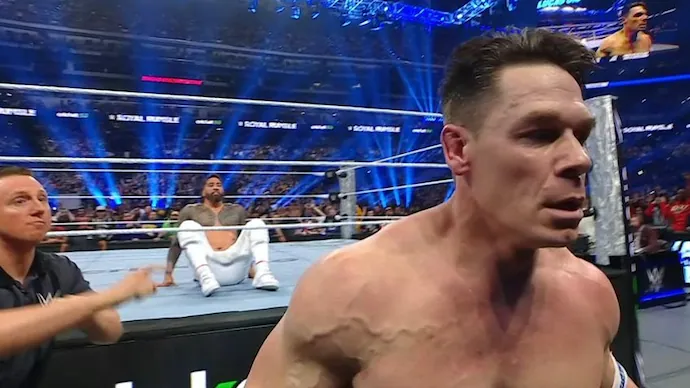

Men's 2025 Royal Rumble - WWE
Jey Uso Stunned John Cena To Win The WWE Men’s Royal Rumble
Jey Uso eliminated John Cena to win the 2025 WWE Men’s Royal Rumble and earn a title shot at WrestleMania 41 in Las Vegas.
Roman Reigns and Seth Rollins got tied up in the ropes allowing CM Punk to eliminate them both. Logan Paul followed that up by tossing Punk over the top rope, leaving him, John Cena, and Jey Uso as the final three. After being eliminated, Rollins attacked Punk and Reigns, curb stomping Reigns on the floor and then again on the steel stairs.

In the ring, Cena attacked both Paul and Uso in the corner, then eliminated Paul to stand alone against Uso. The two both went over the top rope and dueled on the apron, with Cena picking Uso up for an Attitude Adjustment that figured to get him the win, before Uso slipped out and pushed Cena to the floor for a stunning clean victory.
In the surprises department, after Akira Tozawa was attacked on his way to the ring, popular streamer Speed took his place and made quick work of Otis. Speed was cut in half from a spear at the hands of Bron Breakker and promptly tossed over the top rope.
Entrance Order & their Eliminations!
- Rey Mysterio eliminated by Jacob Fatu
- Penta eliminated by Finn Balor
- Chad Gable eliminated by Jacob Fatu
- Carmelo Hayes eliminated by Bron Breakker
- Santos Escobar eliminated by Bron Breakker
- Otis eliminated by Speed
- Bron Breakker eliminated by Roman Reigns
- Akira Tozawa, attacked by Carmelo Hayes and replaced by Speed, then eliminated by Bron Breakker
- Sheamus eliminated by Roman Reigns
- Jimmy Uso eliminated by Jacob Fatu
- Andrade eliminated by Jacob Fatu
- Jacob Fatu eliminated by Braun Strowman
- Ludwig Kaiser eliminated by Penta
- The Miz eliminated by Roman Reigns
- Joe Hendry eliminated by Roman Reigns
- Roman Reigns eliminated by CM Punk
- Drew McIntyre eliminated by Damian Priest
- Finn Balor eliminated by John Cena
- Shinsuke Nakamura eliminated by Jey Uso
- Jey Uso
- AJ Styles eliminated by Logan Paul
- Braun Strowman eliminated by John Cena
- John Cena eliminated by Jey Uso
- CM Punk eliminated by Logan Paul
- Seth Rollins eliminated by CM Punk
- Dom Mysterio eliminated by Damian Priest
- Sami Zayn eliminated by Jey Uso
- Damian Priest eliminated by LA Knight
- LA Knight eliminated by AJ Styles
- Logan Paul eliminated by John Cena
Check Out My Socials Below :
Github
Twitter/X